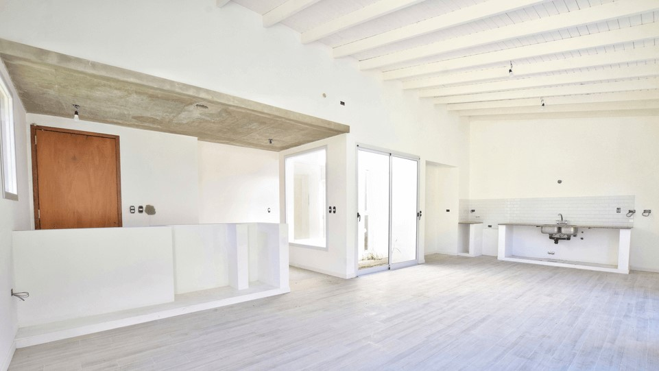

How to Preprare

How to prepare for our visits:
First impressions are essential. When a potential home buyer views your online listing, the pictures they see will help them perceive your property. Your audience will be impressed by clean and pristine photos. Be aware that photos of dirty floors, messy rooms, or cluttered environments will turn away most, if not all, of your potential buyers.
Here are a few you can do to easily improve the appearance of your home
- Remove your vehicle(s) from the driveway(s) and avoid parking in front of the house. Instead, when possible, park further down the street or in a garage.
- Open window treatments like blinds, curtains, or drapes. This will allow natural light in and highlight your neighborhood views.
- Clean your windows until they are completely clean and clear, with no smudges or visible marks.
- Remove anything that is taped or otherwise attached to the refrigerator.
- Take everything out of your sinks, and don't forget to do the dishes!
- Remove everything from the countertops (bread, dishes, toothpaste, combs, soap, food, toiletries, hand towels, and so on) until they are completely clean and open.
- Clean up all of your bedrooms. Make your beds and hide all of your clothes, either by hanging them in your closets or simply stuffing them under the bed (we won't judge).
- Put away all of the children's toys. Place them in storage containers, closets, cabinets, or any other location where they will be completely hidden.
- Remove any pet bowls, litter boxes, or toys from rooms that will be photographed if you have one.
- Place any newspapers and magazines you have lying around the house in a safe place. To increase the visual appeal of your property, place them on bookshelves or in drawers.
- Check that all light bulbs are working and replace any that are broken. Remove dust from light bulbs.
- Garden hoses should be rolled up or hidden, as should all garden tools.
- ls. - Collect all trash and place it in trash cans outside. Then, move all trash cans out of sight during the photoshoot to conceal them.
- Mow and edge the lawn, remove weeds, and pick up leaves.
- Check that the pool and surrounding area are clean. To increase the visual appeal of the waterfalls/spillways, turn on the pumps.
- Keep pets and people out of the way of the photographer during the shoot.
- MOST IMPORTANT: Clear out your clutter. Sweep the floors, vacuum the carpets, clean your counters, and remove any stray objects or junk from the house. Put your best foot forward with a spotless property.